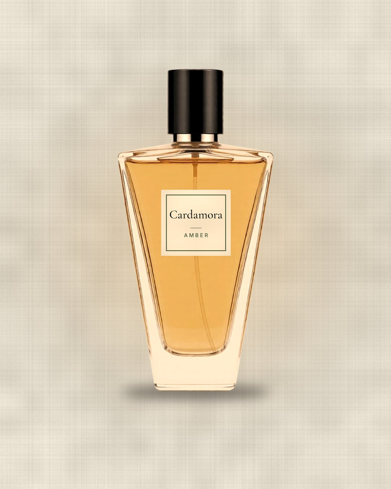
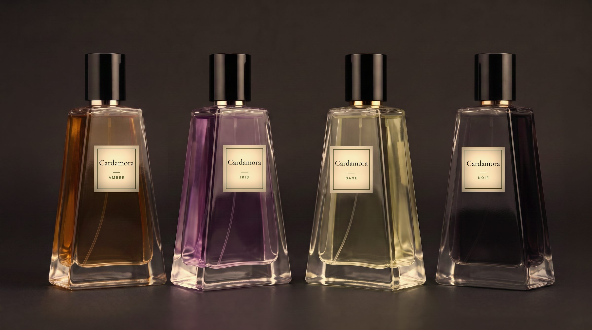
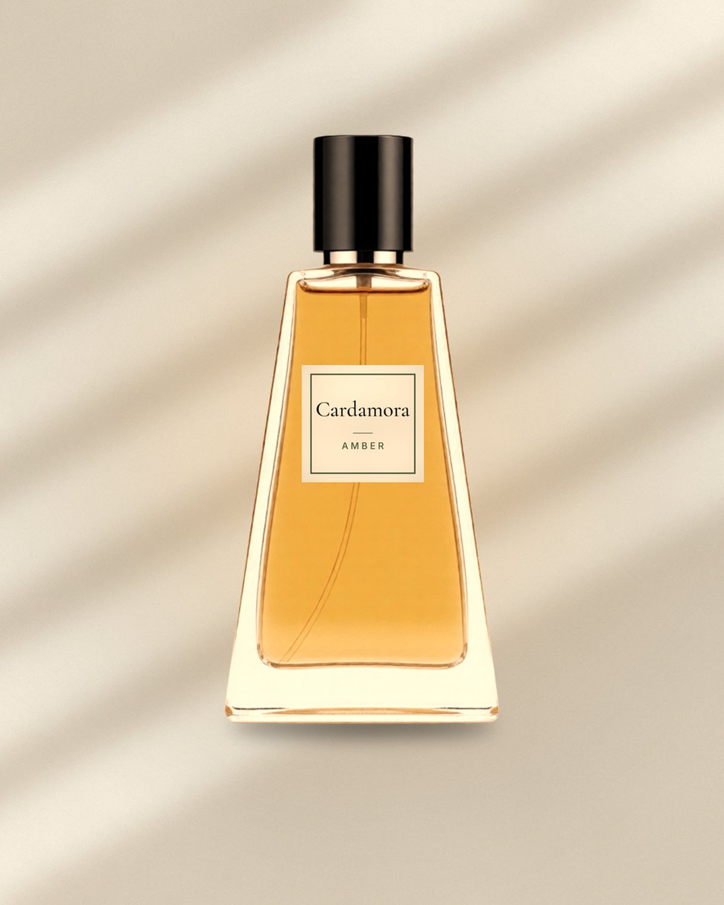
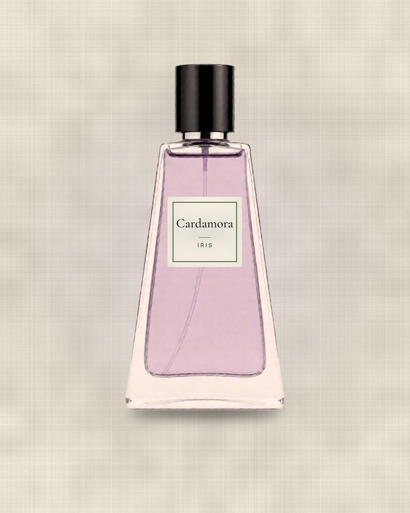
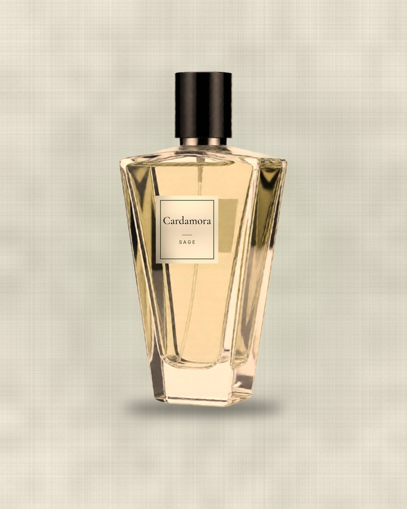

Amber
Warm · honinglicht · linnen
Middaglicht op linnen. Honing, huid en de zachte warmte van gebroken kardemom.
Eau de parfum · binnenkort
Eén specerij, vier karakters. Warm, kruidig en fris tegelijk. Premium, maar nooit opzichtig.


Het verhaal
Breek een kardemompeul open en je kent het moment. Eerst iets helders, bijna citrus. Dan hout. Dan een warmte die op je huid blijft hangen.
Kardemom heet al eeuwen het koninginnekruid: kostbaar, geurig en met de hand geoogst. Wij bouwden er een parfumhuis omheen. Niet luid, wel blijvend.
Eén specerij, vier karakters. Zoals jij, op verschillende momenten van de dag.
De collectie
Dezelfde specerij, telkens in een ander licht. Welke past bij jou?

Warm · honinglicht · linnen
Middaglicht op linnen. Honing, huid en de zachte warmte van gebroken kardemom.
Diep · avond · rook
De avond op zwarte steen. Rook, donker hout en kardemom die nog lang nagloeit.

Poederig · ochtendlicht · bloemblaadjes
Ochtendlicht door een open raam. Poederige iris, bloemblaadjes en een heldere kardemomtop.

Fris · groen · kruidig
Salieblad met ochtenddauw. Groen en kruidig, met kardemom als koele adem.
Het blijft hangen, net als jij.
Nieuwsbrief
Schrijf je in en je hoort als eerste wanneer de vier geuren er zijn. Tot dan krijg je af en toe een spoor in je inbox: een geur, een beeld, een verhaal. Nooit te veel.
Je kunt je op elk moment uitschrijven.